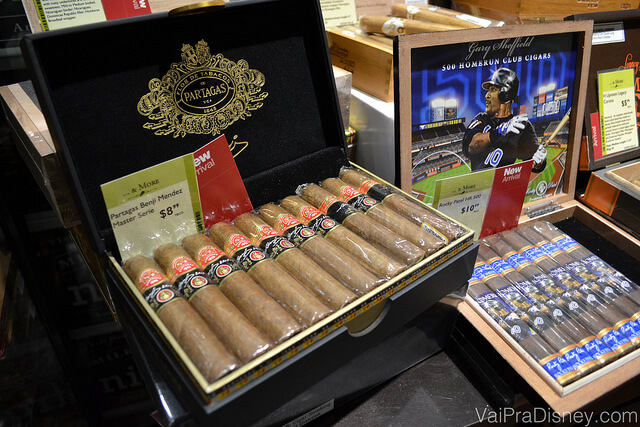

Lojas Recomendadas

Total Wine: o shopping dos vinhos
Que Orlando é o paraíso das compras disso ninguém discorda, mas o que poucos sabem é que além das roupas, cosméticos e eletrônicos, a cidade também reserva boas oportunidades para as compras de especialidades, como por exemplo, vinhos.
Há alguns anos, o meu sogro me apresentou a Total Wine, um shopping de vinhos onde você pode encontrar não só uma variedade gigantesca de marcas, tipos e origens, mas também garrafas de todos os preços. E acredite, quando você começa a comparar com os valores dos vinhos no Brasil e até no free shop, você vai querer levar loja toda.
Fachada da loja Total Wine, que fica próxima ao shopping Mall at Millenia
Eu não sou um super entendido de vinhos, mas gosto muito de tomar os tintos, rosés e também os espumantes. Um coisa boa da Total Wine é que você pode contar com vários especialistas que te ajudam a escolher os melhores custo-benefício da loja. Se você não é muito chegado em ficar pedindo indicação (eu não sou!), algumas plaquinhas classificam os vinhos de acordo com vários critérios: preços, recomendação dos funcionários e até mesmo a pontuação do vinho de acordo com os rankings globais, como o do Wine Advocate por exemplo. Isso já ajuda bastante na hora de escolher os vinhos bons.
A Total Wine é dividida de acordo com a região de origem do vinho e dentro de cada região, a divisão é feita por tipo. Então você tem várias sessões como França, Itália, Argentina, Chile, EUA e dentro de cada uma delas há os espumantes, tintos, brancos e rosés. Vale lembrar que dentro da França, tem uma sessão dedicada aos champanhes, que são os espumantes produzidos na região de Champagne. Essa sessão é um destaque à parte: aqueles que buscam marcas famosas e quase inacessíveis no Brasil, como Veuve Clicquot e Dom Perignon, encontram garrafas a partir de $25 dólares na Total Wine. Esses são champanhes que no Brasil passam de 150 reais a garrafa e dependendo da safra, o preço vai pro espaço.
Corredores que são divididos de acordo com o local de produção e tipo de vinho
Etiquetas que dão mais informações dos vinhos, mostram as recomendações dos funcionários e até mesmo a pontuação de acordo com os rankings internacionais
O Amarone Della Valpolicella é o vinho que a Re mais gosta, feito com uvas passa e é super difícil de achar aqui no Brasil por bons preços
Além dos vinhos, você encontra todo o tipo de bebida alcóolica na Total Wine, como vodkas, gins, tequilas, cervejas, whiskeys e até mesmo a famigerada cachaça (essa última é melhor deixar para comprar no Brasil! hehe). Uma boa idéia para quem quer trazer um presente diferente da viagem, mas não quer distribuir chaveiros do Mickey na volta, é comprar algumas miniaturas de algumas das dezenas de bebidas que são vendidas na Total Wine. Aposto que os amigos e familiares que você quer presentear, vão gostar das garrafinhas.
Garrafas de bebidas em miniaturas. Uma ótima idéia para presentear alguém aqui no Brasil ou para trazer como souvenir
Uma outra sessão da Total Wine que fica um pouco isolada da área de bebidas é a sala de charutos. Lá você encontra uma infinidade de marcas e tipos de charutos que ficam numa espécie de aquário climatizado para manter a qualidade dos cigarros. Você encontra charutos de vários países, mas já aviso que se você for procurar pelos famosso cubanos, não vai encontrá-los. Isso porque é ilegal vender os tais charutos devido ao embargo que existe em relação aos produtos de Cuba nos EUA. De qualquer maneira, essa é uma outra boa idéia para quem quer trazer um presente diferente da viagem.
“Aquário” onde são armazenados os charutos na Total Wine

A pergunta que sempre nos fazem quando o assunto é vinho é como trazer as garrafas para o Brasil. Aqui tenho duas indicações:
– Embalagens especiais: na própria Total Wine você encontra umas embalagens plásticas chamadas de Wine Skin que você embrulha a garrafa e transporta com segurança dentro da sua mala. O problema dessas embalagens é que elas custam caro (média de $7 o par) e cada uma transporta uma garrafa por vez.
– Bubble Wrap : esse é o nome em inglês do famigerado (e muito amado) plástico bolha. Em qualquer Walmart ou Target você encontra rolos dele e junto com uma fita adesiva, você embrulha cada garrafa com bastante vigor. Além de ser mais barato, eu sempre acabo confiando mais no plástico bolha para proteger as garrafas de vinho dentro das minhas malas. Depois é só posiciona-las estrategicamente entre as roupas na mala e já fico pronto pra voltar pro Brasil
Trazendo vinhos para o Brasil
Como já falamos na página sobre a Alfândega, cada pessoa pode trazer ao Brasil e sem custo de importação, até 12 litros de bebidas, o que dá 16 garrafas de vinho por pessoa (para as garrafas comuns de 750ml). Mas pense bem antes de trazer tudo isso pois 16 garrafas fazem um volume em tanto dentro da mala. Outra observação importante é que nos EUA, a idade mínima para a compra e consumo de bebidas alcoólicas é de 21 anos, ou seja, se prepare para levar na loja um documento de identidade com foto (preferencialmente o seu passaporte) para que a compra seja autorizada.
Espero que tenha gostado de mais essa dica. E se quiser ler mais sobre outras lojas que recomendamos em Orlando, clique aqui.
Total Wine Orlando
Endereço: 4625 Millenia Plaza Way. Millenia Plaza. Orlando, FL 32839 (ver no Google Maps)
Telefone: +1 (407) 352-6330
Horário de funcionamento: Domingo a Quinta das 9 as 22 / Sexta e Sábado das 9 as 23
Site: http://www.totalwine.com/